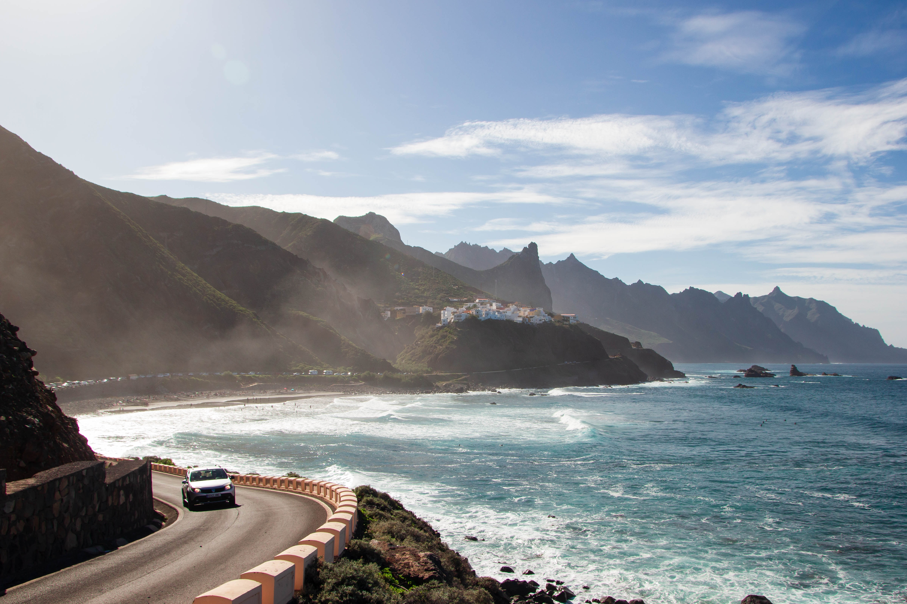
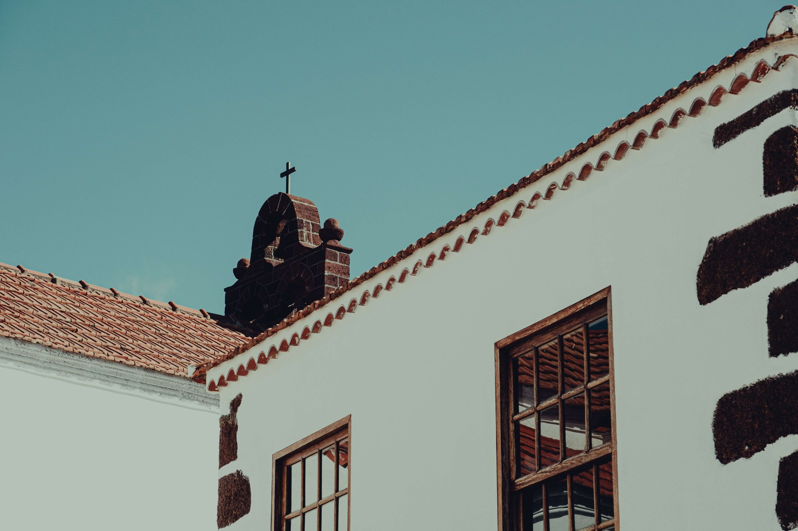
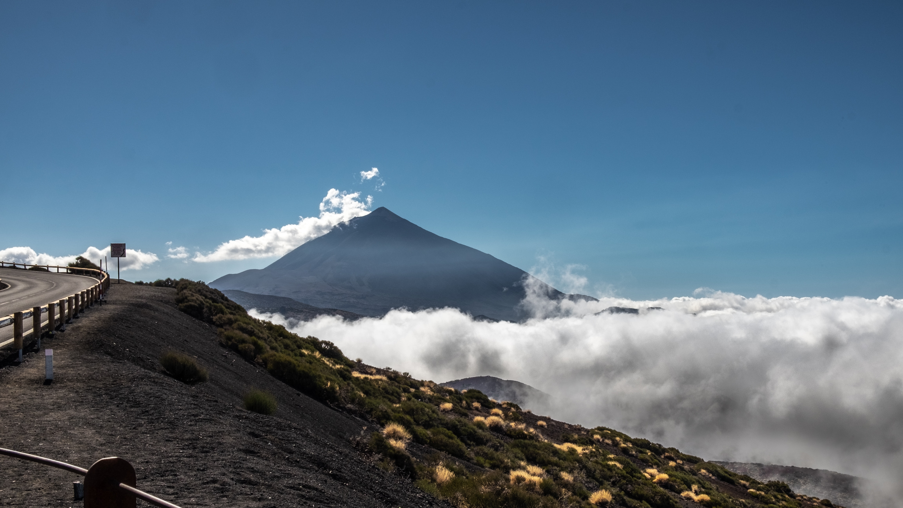

Introduction
Nestled in the azure embrace of the Atlantic Ocean, Tenerife emerges as a captivating gem within the crown of the Canary Islands. With its beguiling blend of natural wonders and cultural richness, this island paradise beckons travelers to explore its enchanting beauty. From the majestic heights of Mount Teide to the tranquil shores of its diverse beaches, Tenerife unfolds as a tapestry of contrasts and surprises. Whether you seek the thrill of outdoor adventures, the embrace of vibrant festivals, or the serenity of lush landscapes, Tenerife stands ready to captivate your senses and unveil the allure of the Canary Islands like never before.
A Tapestry of Landscapes
Tenerife, the crown jewel of the Canary Islands, is a masterpiece woven with an array of landscapes that astonish and captivate. From the rugged grandeur of Mount Teide's volcanic slopes to the tranquil charm of its sandy shores, the island presents a tapestry of contrasts that beckon explorers.
The heart of Tenerife lies within Teide National Park, a UNESCO World Heritage Site that embraces the soaring majesty of Mount Teide. This dormant volcano, Spain's highest peak, presides over a surreal landscape of ancient lava flows and lunar-like craters. Ascending its slopes by cable car unveils panoramic vistas that evoke wonder and humility.
Yet, Tenerife's natural artistry extends beyond its volcanic realm. The Anaga Rural Park is a verdant oasis, a symphony of lush laurel forests and whispering trees. Trails meander through misty valleys, offering hikers glimpses of endemic flora and the thrill of discovery around every corner.
San Andrés, Tenerife

The island's coastline paints a different stroke on this canvas. Golden beaches like Playa de las Teresitas welcome sun-seekers, while the captivating black sands of Playa Jardín invite meditative strolls along the shore. Adventurers can navigate crystalline waters on whale watching excursions, encountering the majestic creatures that grace Tenerife's maritime palette.
From its historic towns, where colonial architecture stands as a testament to a rich past, to the vivacious Carnaval de Santa Cruz that erupts in a riot of colors, Tenerife's cultural threads are interwoven with its landscapes. Local cuisine, a fusion of flavors, offers a taste of the island's diverse heritage.
Tenerife, a canvas where nature's brushstrokes and human ingenuity converge, invites you to explore its varied hues. It's a symphony of sights and experiences, a masterpiece that unveils the island's soul, one landscape at a time.
Cultural Treasures
Beyond the breathtaking landscapes, Tenerife reveals a trove of cultural treasures that add depth and vibrancy to its identity. Steeped in a history that blends Spanish, African, and Latin American influences, the island invites visitors to delve into its rich tapestry of traditions and celebrations.
At the heart of Tenerife's cultural narrative stands the annual Carnaval de Santa Cruz, a dazzling extravaganza that ignites the streets with color, music, and dance. This vibrant festival, one of the world's largest carnivals, showcases the island's spirited soul and invites both locals and visitors to partake in its exuberance.
Historic towns like La Orotava and La Laguna whisper tales of bygone eras through their well-preserved colonial architecture. Cobblestone streets lead to charming plazas, where centuries-old buildings stand as testaments to the island's past. These architectural gems provide a glimpse into Tenerife's evolution, honoring its heritage while embracing modernity.
Market, Santa Cruz De Tenerife

Culinary delights further illustrate the fusion of cultures that define Tenerife. The island's cuisine, a medley of flavors, offers dishes like "papas arrugadas" paired with mojo sauces, showcasing the culinary artistry born from diverse influences.
Local art and crafts echo the island's spirit, with handmade ceramics, intricate lacework, and vibrant paintings portraying Tenerife's essence. Craft markets and galleries provide opportunities to take home a piece of the island's creativity.
Tenerife's cultural treasures stand as a testament to its resilient identity, a harmonious blend of the old and the new, the traditional and the contemporary. Whether you're dancing in the streets during Carnaval or savoring the tastes of its gastronomic wonders, the island's cultural riches invite you to become a part of its living legacy.
An Eclectic Culinary Scene
Tenerife's culinary landscape is a tantalizing mosaic that reflects the island's rich history and diverse influences. Spanning from traditional island fare to international delights, the eclectic offerings tempt the taste buds of both locals and visitors.
At the heart of Tenerife's gastronomy are the beloved "papas arrugadas." These wrinkled potatoes, boiled in sea salt and served with mojo sauces, embody the island's essence. The red and green mojos, made from a blend of peppers and spices, add a burst of flavor that dances on the palate.
Fresh seafood takes center stage along the coast, with dishes like "caldo de pescado" (fish stew) and "vieja sancochada" (boiled parrotfish) showcasing the island's maritime bounty. Pair these dishes with a glass of local wine, as Tenerife boasts a burgeoning wine scene with vineyards perched on volcanic slopes.
Fish Market, Adeje

The culinary scene isn't limited to local delights. Tenerife embraces international flavors, with restaurants offering everything from Spanish tapas to Asian fusion cuisine. The island's cultural diversity is reflected in its eateries, making it a haven for food enthusiasts seeking a global culinary adventure.
Tenerife's bustling food markets, like Mercado de Nuestra Señora de África, provide a sensory journey through its culinary offerings. Fresh produce, artisan cheeses, and exotic spices line the stalls, inviting you to explore the island's flavors at your own pace.
Whether you're indulging in traditional Canary Island dishes or embarking on a gastronomic journey around the world, Tenerife's culinary scene promises a symphony of tastes that celebrate the island's cultural fusion. It's a feast for the senses that leaves an indelible mark on every palate.
Outdoor Adventures and Thrills
Tenerife, a playground of natural wonders, beckons adventure enthusiasts to step into a realm of outdoor excitement that knows no bounds. From challenging hikes to exhilarating water sports, the island's diverse landscapes set the stage for heart-pounding experiences and unforgettable thrills.
Mount Teide stands as a colossal canvas for outdoor adventurers. Hiking trails crisscross its rugged terrain, leading intrepid explorers through volcanic landscapes and ancient craters. The pinnacle experience? Conquering the summit, where panoramic vistas stretch beyond the horizon.
Water babies find their paradise along Tenerife's coastline. Surfing and windsurfing enthusiasts chase the waves at beaches like El Médano, where the winds are just right for a thrilling ride. Diving into the underwater realm reveals vibrant marine life and hidden treasures beneath the waves.
For a literal high, paragliding offers an adrenaline-pumping perspective of Tenerife's beauty. Soaring above verdant valleys and dramatic cliffs, adventurers experience a sense of freedom that's both exhilarating and humbling.
Mount Teide, Teide National Park

Cycling enthusiasts can pedal their way through diverse landscapes, from challenging mountain trails to leisurely coastal routes. Biking in Tenerife combines physical exertion with breathtaking scenery, making every ride an adventure of its own.
As the sun sets, night-time adventure takes center stage. Stargazing atop Mount Teide reveals a celestial panorama free from light pollution, while nocturnal wildlife hikes offer a chance to encounter the island's creatures in their natural habitat.
Tenerife's outdoor thrills cater to all levels of adventurers, from the daredevil to the curious explorer. It's a realm where nature's wonders become a playground, where heartbeats quicken in harmony with the wild, and where memories of adrenaline and awe intertwine in an unforgettable tapestry of experiences.
Conclusion
Tenerife, the crown jewel of the Canary Islands. This enchanting island beckons travelers with a symphony of experiences that span from its breathtaking landscapes to its vibrant cultural heritage and heart-pounding outdoor adventures.
Tenerife's landscapes, like strokes on a canvas, paint a portrait of diversity. From the lunar landscapes of Teide National Park to the verdant embrace of Anaga Rural Park, the island showcases nature's boundless artistry. Its golden and black sand beaches, kissed by azure waters, offer moments of tranquility and contemplation.
Yet, Tenerife's allure extends beyond the physical realm. Its cultural treasures unfold like pages from a history book, telling stories of traditions, festivals, and architectural wonders. The Carnaval de Santa Cruz, a riot of color and energy, brings people together in celebration, while its colonial towns stand as living monuments to the past.
Adventure enthusiasts find their haven in Tenerife, where outdoor pursuits provide an adrenaline rush and a deeper connection with nature. From conquering Mount Teide's heights to surfing the ocean's waves, the island's playground knows no limits. Paragliding, biking, and stargazing complete the portfolio of thrills that await those who seek them.
Tenerife is more than a destination; it's a mosaic of experiences that cater to every traveler's desires. Whether you come for the landscapes that take your breath away, the cultural tapestry that enriches your understanding, or the adventures that quicken your pulse, Tenerife ensures that each moment is a brushstroke in a masterpiece of memories. As you depart this enchanting island, you carry with you not just souvenirs, but a profound connection to a place that resonates with beauty, culture, and the spirit of exploration.